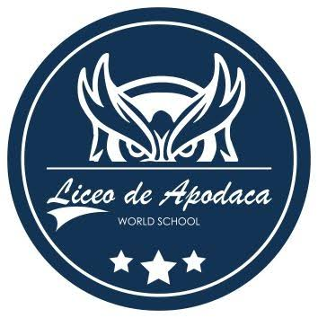

School
Current student at Northville High School | Class of 2028

| Course Name | Description & Value in the U.S. System | Grade |
|---|---|---|
| Cuerdas | "Cuerdas" was the strings ensemble within the music department. I performed with the orchestra on both violin and cello, playing first violin on some occasions. The U.S. system recorded this course as "TI-ART." | G - Passing Grade; Has no effect on GPA; 0.5 Credits towards Art |
| Química | I found chemistry engaging and enjoyable. The U.S. system recorded this course as "TI-SCIENCE." | G - Passing Grade; No effect on GPA; 0.5 Credits towards Science |
| Español | This Spanish-language course was recorded in the U.S. system as "TI-ESPANOL/LIT." | G - Passing Grade; No effect on GPA; 0.5 Credits towards English |
| Matemáticas | Mathematics at Liceo de Apodaca was divided into Basic, Intermediate, and Advanced levels. I studied in the Advanced group, covering topics that included algebra, geometry, and trigonometry. The U.S. system recorded this course as "TI-MATH." | G - Passing Grade; No effect on GPA; 0.5 Credits towards Mathematics |
| Diseño | This was my favorite course. We designed buildings using CAD and explored solutions to environmental challenges. The U.S. system recorded it as "TI-TECH." | G - Passing Grade; No effect on GPA; 0.5 Credits towards Miscellaneous. |
| Educación Física | Although physical education was not one of my favorite courses, I enjoyed playing dodgeball with my friends. The U.S. system recorded it as "TI-PHYS ED." | G - Passing Grade; No effect on GPA; 0.5 Credits towards Physical Education |
| Historia | This was one of my favorite courses. I especially enjoyed collaborating with friends on assignments and choosing our own teams. The U.S. system recorded it as "TI-HISTORY." | G - Passing Grade; No effect on GPA; 0.5 Credits towards Social Studies. |
| Inglés | This was one of my favorite courses. We read works including Fahrenheit 451, Romeo and Juliet, and The Glass Menagerie. For a Shakespeare-themed evening, students dressed in period-inspired clothing and presented aspects of the era. My group focused on music and presented in Elizabethan English. The U.S. system recorded the course as "TI-INGLES." | G - Passing Grade; No effect on GPA; 0.5 Credits towards World Language. |
On March 15, 2025, my family and I relocated to the United States, and I began attending Northville High School in Michigan. Adjusting to the American school system required a substantial transition, particularly because course selection differs significantly from the structure I had known in Mexico. Even so, I used the opportunity to choose classes that aligned with my interests and long-term goals, and I began my coursework in April 2025.
| Course Name | Description | Grade |
|---|---|---|
| Seminar B | An EDP is an educational development plan to raise awareness of the connection between career goals and the credentials required to attain that goal. This is a requirement from the state of Michigan. Students who do not complete their EDP (Seminar modules) will receive an incomplete for their seminar grade for the semester. Students will use Xello to complete their EDP, which can be accessed through Clever. | G - Passing Grade; Has no effect on GPA; 0.25 Credits towards Miscellaneous |
| Metals 1 | This introductory metalsmithing course develops tool skills through techniques such as sawing, punching, drilling, filing, finishing, and enameling. Students apply these skills to projects including jewelry, keychains, and tsubas. | G - Passing Grade; No effect on GPA; 0.5 Credits towards Art |
| Algebra 1 | This course satisfies the Algebra 1 requirement established by the State of Michigan. It is based on the Common Core State Standards and the Standards for Mathematical Practices with an emphasis on the IB Learner Profile. This course will further develop the skills and concepts learned in Math 8. The content of this two-semester course will include the following: writing, graphing and solving linear equations and linear inequalities, exponents, polynomial equations and factoring, graphing and solving quadratic equations, exponential modeling, radical functions and equations, data analysis and displays. A TI-84+c graphing calculator is recommended for this course. Students who successfully complete one year of Algebra 1 are prepared to enroll in Geometry the next school year. | G - Passing Grade; No effect on GPA; 0.5 Credits towards Math |
| Concert Orchestra | Concert Orchestra is a year-long non-audition ensemble open to all students who play traditional orchestra instruments (violin, viola, cello, bass, harp). Students will build musicianship and technique through varied repertoire, including chamber music and/or solo work. Students will be required to perform and rehearse outside of the school day in sectionals, and as an ensemble. Individual proficiency will require practice outside of the school day. Students will be given enrichment opportunities to flourish and reach their full potential. Music theory, history, and appreciation will be embedded in music literacy concepts. Attendance at camp is highly encouraged (One week of summer day camp for high school-only peer connections, sectionals, and workshops, Details to follow.) NOTE: Students may play in both orchestras on primary instruments (symphony) and secondary instruments (concert) if they so choose. | G - Passing Grade; No effect on GPA; 0.5 Credits towards Music |
| Astronomy & Meteorology | This course provides an introduction to the concepts of modern astronomy and meteorology. Astronomy topics include the origin and history of the universe, stellar distances, star formation, and motion of celestial objects including analysis of Kepler’s laws of planetary motion. Students will use various mathematical formulas to determine distances and time in the universe, as well as the physics behind planetary motion. Meteorology topics include structure and function of the atmosphere and its effect on weather and climate. Analysis of weather conditions and predictability is emphasized. Global climate change is also discussed. | G - Passing Grade; No effect on GPA; 0.5 Credits towards Science. |
| Geology | This lab-based course focuses on exploring and understanding the physical structure of the Earth. Topics include mineralogy, rock formation, geologic time, plate tectonics, and human impact. This course includes discussion and analysis of natural disasters and their impacts on society. Students will also virtually explore several national parks to gain a better understanding of geologic features. | G - Passing Grade; No effect on GPA; 0.5 Credits towards Science |
| English | English 9, a course required for all freshmen, offers broad experience in literature, writing, and speaking. Through discussion, written analysis, and oral presentation, students will explore various literary formats: the short story, poetry, drama, and the novel. A variety of writing experiences beginning with shorter compositions and extending to full-length essays will provide a medium for lessons in mechanics and vocabulary. Units within this course encompass the philosophies of the International Baccalaureate Middle Years Program. | G - Passing Grade; No effect on GPA; 0.5 Credits towards English. |
| Advanced Programming in C++ | This course covers the fundamentals of computer science and the C++ programming language. Important data structures and algorithms, which better equip students to create more professional software, will be covered. Students will complete hands-on exercises, imaginative programming problems, and interdisciplinary projects throughout the course. The following topics will be covered: entering, compiling and running programs, variables and constants, math operations, strings and screen I/O, decision making programs, loops, functions, and arrays. | G - Passing Grade; No effect on GPA; 0.5 Credits towards Computer Studies. |
After my first semester in the United States, I had adjusted to the new environment and begun reassessing my academic direction. In Mexico, I had planned to attend a preparatory program and pursue a degree in mechatronics engineering at the Universidad Autónoma de Nuevo León. In the U.S., I explored the opportunities available in the new school system and focused on subjects that aligned with my interests. Project Lead the Way introduced me to engineering coursework. As I learned to navigate course requirements and pathways, I also completed introductory courses, including U.S. History and Biology, before my schedule was fully aligned with my goals.
| Course Name | Description | Grade |
|---|---|---|
| Ceramics 1 | This course introduces hand-building techniques such as pinch pots, coils, and slab construction. Students explore clay through experimentation and creative projects. Appropriate attire is required, and a materials fee applies. | B+; 0.5 Credits towards Art |
| English | From an ancient Greek play to a contemporary South African essay, English 10 challenges students to make connections between their lives and the people of other countries and ethnic groups. Students explore novels, short stories, plays, non-fiction, and poetry through a multicultural approach to literature. As students analyze and interpret readings of gifted writers, they mine the contributions of a diverse and complex world population - one whose future depends upon global consciousness and cooperation. In response to the literature, students integrate writing and speaking activities that include impromptu essays, oral presentations, documented research, creative and poetic compositions and projects, and analytical reviews. English 10 is a year-long course and a requirement for high school graduation. Through both the writing and literature, students will be engaging with the International Baccalaureate Middle Years Program. | B-; 0.5 Credits towards English |
| Project Lead the Way - Introduction to Engineering Design | Students dig deep into the engineering design process, applying math, science, and engineering standards to hands-on projects. They work both individually and in teams to design solutions to a variety of problems using 3-D modeling software and use an engineering notebook to document their work. | A; 0.5 Credits towards Engineering/Industrial Arts |
| Geometry | This course satisfies the Geometry requirement established by the State of Michigan. It is based on the Common Core State Standards and the Standards for Mathematical Practices with an emphasis on the IB Learner Profile. This course follows Algebra 1. The content of this course will include: logical reasoning and proof, parallel and perpendicular lines, triangle congruence, special properties of triangles, quadrilaterals, transformations, similarity, trigonometry, arcs and angles of circles, area and measurement, and surface area and volume. Introduction to Geometric Probability. Students who successfully complete one year of Geometry will be prepared to enroll in Algebra 2 the next school year. | A; 0.5 Credits towards Mathematics |
| Symphonic Orchestra | Symphony Orchestra is a year-long auditioned ensemble of ideal balanced instrumentation, performing at an extremely high level of achievement. The ensemble is open to all students who play traditional orchestra instruments (violin, viola, cello, bass, harp) who have met all audition requirements. This ensemble plays a wide variety of orchestral repertoire including masterpieces by well-known composers as well as modern works for string orchestra and full orchestra, which includes advanced wind players. Chamber music and/or solo work will also be part of the course. Students will be required to perform and rehearse outside of the school day in sectionals, and as an ensemble. Individual proficiency will require practice outside of the school day. Students will be given enrichment opportunities to flourish and reach their full potential. Mentoring and leadership will be cultivated. Music theory, history, and appreciation will be integrated into the curriculum. Attendance at camp is highly encouraged (One week of summer day camp for high school-only peer connections, sectionals, and workshops, Details to follow.) NOTE: Students may play in both orchestras on primary instruments (symphony) and secondary instruments (concert) if they so choose. | A-; 0.5 Credits towards Music. |
| Biology | This Biology course emphasizes the exploration and application of key life science concepts through the understanding of disciplinary core ideas, use of science and engineering practices, and connection of crosscutting concepts based on the Michigan Science Standards. Topics explored in this semester include: Structure and Function, Matter and Energy in Organisms and Ecosystems, and Interdependent Relationships in Ecosystems. Units within Biology A encompass the International Baccalaureate Middle Years Program (MYP) philosophy. | B; 0.5 Credits towards Science |
| U.S. History | U.S. History 1890-Present is a two semester course required for graduation. Beginning with America’s industrial and territorial expansion in the late 19th century, we explore the extremes of wealth and poverty faced by citizens and immigrants alike. In the 20th century, we investigate the challenge of America maintaining economic growth while enacting social reform, using as examples the Great Depression and the Civil Rights movement. The evolution of America’s role as a superpower is traced through the two World Wars, Vietnam, and the collapse of communism, which serves as a backdrop for understanding our role in a rapidly changing world. This course incorporates units in the MYP philosophy. | B; 0.5 Credits towards Social Studies. |
| Seminar | ------ | G - Passing Grade; No effect on GPA; 0.25 Credits towards Miscellaneous. |
| Course Name | Description | Grade |
|---|---|---|
| Seminar | ------ | G - Passing Grade; Has no effect on GPA; 0.25 Credits towards Miscellaneous |
| U.S. History | ------ | C+; 0.5 Credits towards Social Studies |
| Geometry | ------ | B+; 0.5 Credits towards Math |
| Concert Orchestra | Concert Orchestra is a year-long non-audition ensemble open to all students who play traditional orchestra instruments (violin, viola, cello, bass, harp). Students will build musicianship and technique through varied repertoire, including chamber music and/or solo work. Students will be required to perform and rehearse outside of the school day in sectionals, and as an ensemble. Individual proficiency will require practice outside of the school day. Students will be given enrichment opportunities to flourish and reach their full potential. Music theory, history, and appreciation will be embedded in music literacy concepts. Attendance at camp is highly encouraged (One week of summer day camp for high school-only peer connections, sectionals, and workshops, Details to follow.) NOTE: Students may play in both orchestras on primary instruments (symphony) and secondary instruments (concert) if they so choose. | A-; 0.5 Credits towards Music |
| Biology | ------ | B+; 0.5 Credits towards Science. |
| PLTW - Intro to Engineering Design | ------ | B; 0.5 Credits towards Engineering/Industrial Arts |
| English | ------ | B+; 0.5 Credits towards English. |
| Advanced Programming in C++ | This course covers the fundamentals of computer science and the C++ programming language. Important data structures and algorithms, which better equip students to create more professional software, will be covered. Students will complete hands-on exercises, imaginative programming problems, and interdisciplinary projects throughout the course. The following topics will be covered: entering, compiling and running programs, variables and constants, math operations, strings and screen I/O, decision making programs, loops, functions, and arrays. | A; 0.5 Credits towards Computer Studies. |
Junior year was a pivotal point in my academic development. I was accepted into the Mechatronics program at the William D. Ford Tech & Career Center, which offered a combination of hands-on technical training and industry-recognized credentials. The opportunity was highly valuable, but it also required a significant commitment: four of the eight class periods in my schedule were occupied by the program, which limited my ability to continue along the PLTW pathway and reduced flexibility in my math and science course selection.
| Course Name | Description | Grade |
|---|---|---|
| Ford Tech - Mechatronics | Mechatronics combines mechanical, electrical, computer, and robotics systems. In manufacturing, it helps make everyday products like smart doorbells, cameras, robot vacuums, and drones. It is also important in healthcare, making devices like pacemakers, surgical robots, and prosthetic limbs, and in transportation, where it helps create smart vehicles and automated factories. Mechatronics engineers are in high demand, since they have skills that are useful in many industries, such as automotive, aerospace, aviation, bioengineering, manufacturing, and energy. | #; 0.5 Credits towards Engineering/Industrial Arts |
| Modern Thought and Literature - English | In this course, students follow a thematic approach to understanding the world and culture to which they belong. They will read diverse interpretations of various literary works and analyze films to compare them with companion novels. Various perspectives shared in group discussions encourage students to consider different points of view, reflect on personal interpretations of characters/settings, and make connections to real-life situations. Along with extensive readings, students will complete formal analyses, comparative essays, expository writing, formal research using MLA format, and final group presentations that provide additional opportunities for students to express their interpretation of a text/film. | #; 0.5 Credits towards English |
| Algebra 2 | This course satisfies the Algebra 2 requirement established by the State of Michigan. It is based on the Common Core State Standards and the Standards for Mathematical Practices with an emphasis on the IB Learner Profile. This course follows Geometry and Algebra 1. The content of this course will include: functions and their graphs, inequalities, piecewise functions, absolute value functions, solving linear systems and linear inequalities, basic trigonometry, exponents, quadratics, exponential and logarithmic functions, and rational functions. A TI-84+c graphing calculator is recommended for this course. Students who successfully complete one year of Algebra 2 will be prepared to enroll in Pre Calculus or IB Math Applications SL the next school year. | #; 0.5 Credits towards Mathematics |
| World History and Geography | World History and Geography is a course required for graduation. The course takes a global and comparative approach to studying the world and its past to develop a greater understanding of worldwide events, processes, and interactions among the world’s people, cultures, societies, and environment. Integrating geography and history the course will engage students in cross-time and cross-regional studies. The course covers world history and geography from 300 CE/AD to the present. The first semester will cover the Crisis in the Classical World to Interpreting Europe’s Increasing Global Power and Political Revolutions. The second semester will continue from the Growth of Nationalism and Nation-States to the Contemporary Global Issues of Population, Resources, Patterns of Global Interactions, Conflict, Cooperation, and Security. | #; 0.5 Credits towards Social Studies |
| Honors Physics | This course is designed for students who are looking to be challenged beyond the basic Michigan Merit Curriculum (MMC) requirements. Students interested in pursuing STEM-related careers should consider this course. Honors Physics A is designed to develop the concepts of motion, force, Newton’s Laws, energy, momentum, and rotational motion. Lab experiences, discussions, lectures, and problem solving are included in the course. The pacing of concepts and the depth of study are greater in this course as compared to Physics A. Since this class is heavily math based, students must have a strong working knowledge of algebra and a good working knowledge of trigonometry. Students will be expected to solve problems and manipulate equations independently. An inexpensive scientific calculator is required for this course. Students taking this course should plan to take Honors Physics B the following semester. Students taking this course are eligible for AP Physics C. | #; 0.5 Credits towards Science. |
| Virtual Seminar | ------ | G - Passing Grade; No effect on GPA; 0.25 Credits towards Miscellaneous. |
| Course Name | Description | Grade |
|---|---|---|
| Ford Tech - Mechatronics | Mechatronics combines mechanical, electrical, computer, and robotics systems. In manufacturing, it helps make everyday products like smart doorbells, cameras, robot vacuums, and drones. It is also important in healthcare, making devices like pacemakers, surgical robots, and prosthetic limbs, and in transportation, where it helps create smart vehicles and automated factories. Mechatronics engineers are in high demand, since they have skills that are useful in many industries, such as automotive, aerospace, aviation, bioengineering, manufacturing, and energy. | #; 0.5 Credits towards Engineering/Industrial Arts |
| Modern Thought and Literature - English | In this course, students follow a thematic approach to understanding the world and culture to which they belong. They will read diverse interpretations of various literary works and analyze films to compare them with companion novels. Various perspectives shared in group discussions encourage students to consider different points of view, reflect on personal interpretations of characters/settings, and make connections to real-life situations. Along with extensive readings, students will complete formal analyses, comparative essays, expository writing, formal research using MLA format, and final group presentations that provide additional opportunities for students to express their interpretation of a text/film. | #; 0.5 Credits towards English |
| Algebra 2 | This course satisfies the Algebra 2 requirement established by the State of Michigan. It is based on the Common Core State Standards and the Standards for Mathematical Practices with an emphasis on the IB Learner Profile. This course follows Geometry and Algebra 1. The content of this course will include: functions and their graphs, inequalities, piecewise functions, absolute value functions, solving linear systems and linear inequalities, basic trigonometry, exponents, quadratics, exponential and logarithmic functions, and rational functions. A TI-84+c graphing calculator is recommended for this course. Students who successfully complete one year of Algebra 2 will be prepared to enroll in Pre Calculus or IB Math Applications SL the next school year. | #; 0.5 Credits towards Mathematics |
| World History and Geography | World History and Geography is a course required for graduation. The course takes a global and comparative approach to studying the world and its past to develop a greater understanding of worldwide events, processes, and interactions among the world’s people, cultures, societies, and environment. Integrating geography and history the course will engage students in cross-time and cross-regional studies. The course covers world history and geography from 300 CE/AD to the present. The first semester will cover the Crisis in the Classical World to Interpreting Europe’s Increasing Global Power and Political Revolutions. The second semester will continue from the Growth of Nationalism and Nation-States to the Contemporary Global Issues of Population, Resources, Patterns of Global Interactions, Conflict, Cooperation, and Security. | #; 0.5 Credits towards Social Studies |
| Honors Physics | This course is designed for students who are looking to be challenged beyond the basic Michigan Merit Curriculum (MMC) requirements. Students interested in pursuing STEM-related careers should consider this course. Honors Physics B is designed to expand on the concepts developed in Honors Physics A. The course will develop the concepts of electricity, magnetism, waves, sound, and light. The format of the course is similar to Honors Physics A. Since this class is heavily math based, students must have a strong working knowledge of algebra and a good working knowledge of trigonometry. Students will be expected to solve problems and manipulate equations independently. An inexpensive scientific calculator is required for this course. Students taking this course are eligible for AP Physics C. | #; 0.5 Credits towards Science. |
| Virtual Seminar | ------ | G - Passing Grade; No effect on GPA; 0.25 Credits towards Miscellaneous. |
This section will be updated as senior-year experiences and academic milestones continue to develop.